Protocolo DNS
Resultados de aprendizaje y criterios de evaluacion que se evaluarán en esta unidad.
| Resultados de aprendizaje de la unidad didáctica: |
|---|
| RA. 2 Instala servicios de resolución de nombres, describiendo sus características y aplicaciones. |
| Criterios de evaluación de la unidad didáctica: |
|---|
| a) Se han identificado y descrito escenarios en los que surge la necesidad de un servicio de resolución de nombres. |
| b) Se han clasificado los principales mecanismos de resolución de nombres. |
| c) Se ha descrito la estructura, nomenclatura y funcionalidad de los sistemas de nombres jerárquicos. |
| d) Se ha instalado un servicio jerárquico de resolución de nombres. |
| e) Se ha preparado el servicio para almacenar las respuestas procedentes de servidores de redes públicas y servirlas a los equipos de la red local. |
| f) Se han añadido registros de nombres correspondientes a una zona nueva, con opciones relativas a servidores de correo y alias. |
| g) Se ha trabajado en grupo para realizar transferencias de zona entre dos o más servidores. |
| h) Se ha comprobado el funcionamiento correcto del servidor. |
Nota:
Los criterios de evaluación en negrita será evaluados durante la FCT.
1 - Introducción
¿Qué es el DNS?
- El DNS (Domain Name System o Sistema de Nombres de Dominio) es un sistema distribuido y jerárquico que permite asociar nombres de dominio legibles para las personas (
www.aules.edu.gva.es), con direcciones IP (195.77.20.168).
¿Para qué sirve?
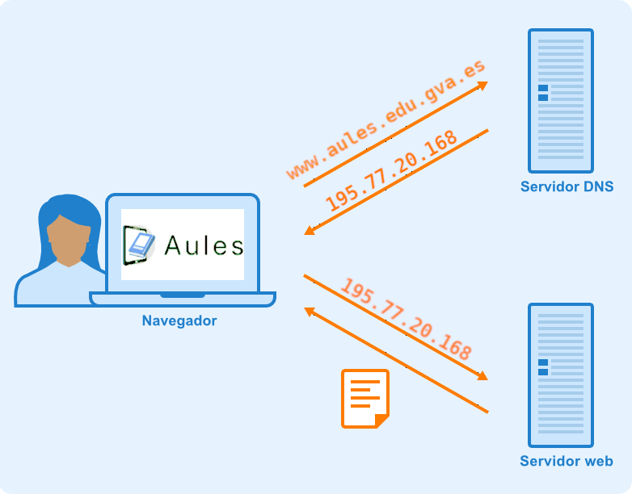
-
El servicio de nombre de dominio DNS es fundamental para el funcionamiento de Internet y de muchas redes privadas.
-
Entre sus principales funciones encontramos:
-
Simplifica el acceso a los servicios de red: Permite utilizar nombres fáciles de recordar (en lugar de direcciones IP).
-
Aporta flexibilidad: Si un servicio cambia de servidor o de dirección IP, es posible modificar la información DNS manteniendo el mismo nombre de dominio. De esta forma, los usuarios pueden continuar utilizando el mismo nombre para acceder al servicio.
-
Permite localizar servicios de red: Los dispositivos pueden consultar el DNS para obtener información sobre la ubicación de diferentes servicios, como servidores web, servidores de correo electrónico, redes de distribución de contenidos (CDN, Content Delivery Network)...
-
-
Facilita la administración de redes locales donde también es posible asociar nombres a equipos y servicios locales.
2 - Protocolo DNS
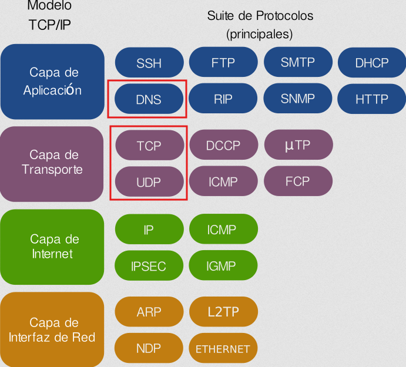
- El servicio de nombres de dominio utiliza el protocolo DNS para realizar las consultas y las respuestas.
- Se trata de un protocolo de capa de aplicación que puede utilizar tanto UDP como TCP en la capa de transporte.
- El servidor DNS utiliza el puerto 53 para realizar las consultas y recibir las respuestas.
- Habitualmente, tanto las consultas del cliente como las respuestas del servidor caben en un datagrama (512 bytes) y se utiliza UDP (de hecho, generalmente se dice que el DNS usa UDP).
- Si la información a transmitir es amplia (por ejemplo, una respuesta con una lista con mucha información), la comunicación pasa a TCP automáticamente.
- Otro caso en el que la comunicación es por TCP es cuando se realiza la transferencia de información de una zona entre servidores primarios y secundarios.
Resumen de los que hemos visto
- El protocolo DNS es habitualmente UDP, pero puede ser TCP y UDP.
- Se trata de un protocolo de capa de aplicación y utiliza el puerto 53.
-
Los datagramas DNS se componen de varios apartados, tal como se puede ver en la siguiente consulta con host:
Ejemplo de consulta DNS
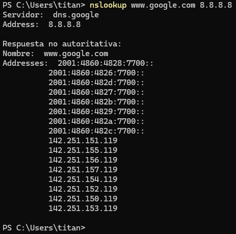
Explicación del comando
- nslookup: Herramienta utilizada para consultar a los servidores de nombres DNS y obtener información sobre direcciones IP o registros de dominio.
- www.google.es: Dominio objetivo cuya dirección IP (o registros asociados) deseamos consultar.
- 8.8.8.8: Dirección IP del servidor DNS específico al que hemos realizado la consulta.
3 - Mecanismos de comunicación DNS
- La comunicación DNS es un mecanismo de consulta/respuesta de tipo cliente / servidor.
- Los datagramas, por tanto, serán de query (consulta) o de answer (respuesta).
Los apartados que componen un mensaje DNS son:
- HEADER. Cabecera del mensaje que indica si se trata de una consulta o de una respuesta. Contiene el id (identificador) del mensaje, flags y un resumen de qué secciones del mensaje llevan información y cuánta.
- QUESTION. Esta sección contiene la consulta que se ha efectuado, es decir, qué dato se ha pedido al servidor. Puede ser la resolución de un nombre de dominio a una dirección IP, pedir la lista de servidores de impresión, etc.
- ANSWER. Sección que contiene la respuesta obtenida del servidor. Esta respuesta será autoritativa o no en función de si el servidor que responde es autoritativo para esa zona: cuando la respuesta procede de un servidor caché/resolver (no autoritativo), algunas utilidades de consulta la muestran como non-authoritative answer.
- AUTHORITY. Esta sección contiene las respuestas que son autoritativas para la consulta efectuada (puede estar vacía).
- ADDITIONAL. Contiene información adicional para completar la respuesta. En el ejemplo se observa que completa la resolución de los nombres de máquina que aparecen en la sección ANSWER, indicando su dirección IP correspondiente.
Ejemplo de comunicación DNS
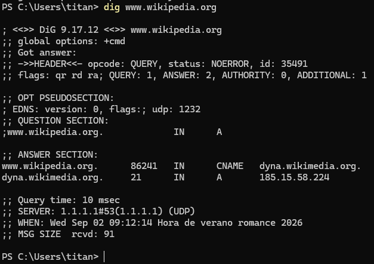
Explicación del comando
- dig: Domain Information Groper (explorador de información de dominios) es una utilidad habitualmente utilizada para consultar servidores DNS de manera detallada.
- A diferencia de nslookup, dig muestra información mucho más técnica, limpia y sin interpretaciones automáticas que a veces confunden el diagnóstico.
- www.wikipedia.org: Es el dominio a consultar.
4 - Servidores DNS
- Un servidor DNS es el elemento de la infraestructura de red que aloja la información de uno o más espacios de nombres de dominio y que responde a las consultas (queries) que le llegan, ya sea resolviéndolas directamente (si tiene autoridad sobre los datos) o remitiendo al cliente hacia otros servidores que sí la tienen.
- Un mismo servidor puede ser autoritativo para unas zonas y actuar solo como intermediario (resolutor) para otras, y puede alojar simultáneamente varias zonas con roles distintos.
¿Qué es un servidor autoritativo?
- Un servidor autoritativo es aquel que tiene autoridad sobre una zona concreta y puede responder a las consultas con información oficial y actualizada de esa zona.
- Por ejemplo, el servidor autoritativo para la zona
edu.gva.espuede responder a consultas sobre nombres comowww.edu.gva.esocorreo.edu.gva.es, proporcionando las direcciones IP correspondientes.
4.1 Zonas DNS
- Una zona DNS es la porción del espacio de nombres cuya administración corresponde a uno (o varios) servidores autoritativos, que mantienen sus registros y responden las consultas sobre ella.
- Una zona no tiene por qué coincidir con un dominio completo: si un subdominio se delega a otros servidores, deja de formar parte de la zona padre.
- Por ejemplo, dentro del dominio
gva.es, siedu.gva.esestá delegado,www.edu.gva.espertenece a la zonaedu.gva.esy no agva.es.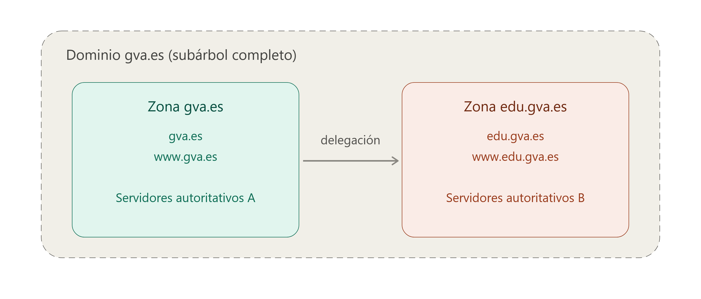
- La información de una zona (sus registros de recursos) se puede almacenar en un archivo de texto en el propio servidor o en un directorio centralizado (como AD DS en entornos Windows). En este último caso se habla de zonas integradas, que permiten que varios servidores compartan y escriban sobre la misma copia de datos.
4.2 Tipos de zona
- Zona primaria. Es el origen editable de la zona. Todas las altas, bajas y modificaciones de registros se hacen aquí. El servidor que la aloja se llama servidor primario de esa zona.
- Zona secundaria. Es una copia de solo lectura de una zona primaria, obtenida por red desde otro servidor DNS. No se puede editar directamente ni almacenarse como zona integrada, ya que siempre depende de la fuente primaria.
- Zona de rutas internas (stub). Contiene únicamente los registros NS (y sus direcciones) necesarios para identificar qué servidores son autoritativos para una zona concreta, sin el resto de datos. Se usa para mantener actualizada la lista de servidores de una zona delegada y para mejorar la resolución evitando consultas innecesarias a los servidores raíz.
- Zona de búsqueda inversa. Permite la consulta contraria a la habitual: a partir de una dirección IP, obtener el nombre del equipo (en vez de nombre → IP).
Zona de búsqueda inversa
- Para llevar a cabo la resolución de nombre inversa, el DNS utiliza un dominio especial llamado in-addr.arpa (para IPv4) o ip6.arpa (para IPv6).
-
La dirección IP se transforma e inserta dentro de este dominio en orden inverso a como se escribe normalmente.
Ejemplo
- Para averiguar el nombre asociado a la IP
192.168.10.20, el resolver consulta el dominio:
20.10.168.192.in-addr.arpa - El registro que responde a este tipo de consulta se llama registro PTR (pointer record), y es el encargado de indicar qué nombre de dominio corresponde a esa dirección IP.
- Para averiguar el nombre asociado a la IP
-
Usos habituales de la resolución inversa:
- Verificación de correo electrónico: muchos servidores de correo comprueban que la IP del remitente tenga un PTR válido antes de aceptar el mensaje, como medida contra el spam.
- Diagnóstico y registro (logging): en herramientas como
traceroute,pingo en los logs de un servidor, es más legible ver el nombre de una máquina que su dirección IP. - Auditoría y seguridad: permite identificar qué equipo hay detrás de una IP concreta durante el análisis de tráfico o incidentes.
A diferencia de la resolución directa, la resolución inversa requiere que el administrador de la red configure explícitamente esta zona y sus registros PTR, ya que no se genera de forma automática a partir de los registros A o AAAA.
Importante
Un mismo servidor no puede alojar a la vez una zona primaria y una secundaria o stub para el mismo nombre de dominio.
4.3 Transferencia de zona
Se conoce como transferencia de zona el proceso de replicar el contenido de una zona desde el servidor que la genera (primario) hacia los servidores que tienen copia de ella (secundarios). Se puede iniciar de dos maneras:
- Por notificación: el servidor primario avisa a los secundarios cuando ha habido un cambio (mecanismo definido en el RFC 1996).
- Por intervalo de refresco: al arrancar el servicio o al caducar dicho intervalo (por defecto, 15 minutos, definido en el registro SOA de la zona), el servidor secundario consulta al primario para comprobar si hay cambios.
Hay dos tipos de transferencia:
- AXFR (transferencia completa): replica todo el archivo de zona.
- IXFR (transferencia incremental): replica solo los registros modificados desde la última sincronización, reduciendo el tráfico de red.
Por motivos de seguridad, es recomendable restringir qué servidores pueden solicitar una transferencia de zona (habitualmente, solo los indicados en los registros NS de la zona), ya que una transferencia abierta a cualquier host expondría toda la estructura de la red interna.
4.4 Delegación de zonas
- El espacio de nombres se puede dividir en varias zonas para delegar su administración a otros departamentos u organizaciones (por ejemplo, delegar
edu.gva.esdesde la zonagva.es). - Para cada delegación es necesario crear registros NS en la zona padre que apunten a los servidores autoritativos de la nueva subzona, de modo que otros servidores y clientes puedan encontrarlos correctamente.
4.5 Control de acceso
- El acceso de escritura a una zona y a sus registros se puede restringir mediante listas de control de acceso (ACL), que determinan qué usuarios o grupos pueden crear o modificar registros concretos.
- Esto permite, por ejemplo, reservar ciertos nombres para que solo determinados usuarios los puedan registrar, protegiendo la zona de modificaciones no autorizadas sin dejar de permitir su uso general.
5 - Consultas al DNS
En una búsqueda de DNS se pueden producir tres tipos de consultas.
1. Consulta recursiva:
- En una consulta recursiva, un cliente DNS requiere que un servidor DNS (generalmente un resolver DNS recursivo) responda al cliente con el registro del recurso solicitado o un mensaje de error si el resolver no puede encontrar el registro.
2. Consulta iterativa:
- En esta situación, el cliente DNS permitirá que un servidor DNS devuelva la mejor respuesta posible.
- Si el servidor DNS consultado no cuenta con un nombre que corresponda con el de la consulta, devolverá una referencia a un servidor DNS autoritativo para un nivel inferior del espacio de nombres de dominio.
- El cliente DNS hará a continuación una consulta a la dirección de referencia.
- Este proceso continúa con servidores DNS adicionales que siguen en la cadena de consulta hasta conseguir la información requerida, se produzca un error o se supere el tiempo de espera.
3. Consulta no recursiva:
- Generalmente se produce cuando un cliente resolver DNS consulta a un servidor DNS por un registro al que tiene acceso porque o bien es autoritativo para el registro o el registro existe dentro de su caché.
- Generalmente, el servidor DNS almacenará en caché registros DNS para prevenir el consumo de ancho de banda adicional y la carga en los servidores que preceden en la cadena.
- Al usar una combinación de estas consultas, un proceso optimizado para la resolución de DNS puede conllevar una reducción de la distancia recorrida.
- En una situación ideal, los datos de registro almacenados en la memoria caché estarán disponibles, lo cual permitirá que un servidor de nombres DNS devuelva una consulta no recursiva.
6 - Funcionamiento del servicio DNS
-
El funcionamiento del DNS se basa en un sistema jerárquico y distribuido.
-
Como hemos visto, la resolución de un nombre puede implicar diferentes servidores DNS.
-
De forma simplificada, el proceso es el siguiente:
6.1 Inicio de la consulta y comprobación de la caché
-
El dispositivo realiza una consulta a un servidor DNS recursivo, también denominado DNS resolver.
-
Habitualmente, este servidor es proporcionado por el proveedor de acceso a Internet, aunque también puede pertenecer a una organización, una empresa o ser configurado manualmente.
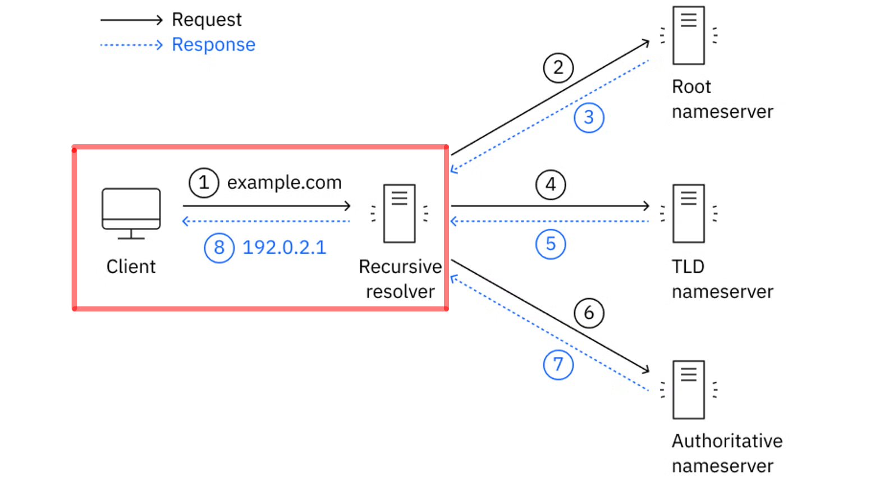
-
Antes de realizar nuevas consultas, pueden comprobarse diferentes cachés DNS.
-
Por ejemplo, pueden existir cachés en:
- El navegador.
- El sistema operativo.
- El servidor DNS recursivo.
-
Si alguno de estos componentes dispone de una respuesta válida almacenada en caché, no será necesario realizar (repetir) todo el proceso de resolución.
-
La información almacenada en caché tiene un tiempo de validez denominado TTL (Time To Live) pasado el cual caducará y se deberá volver a consultar los servidores DNS correspondientes.
6.2 Consulta al servidor raíz (Root Server)
-
Si el resolver recursivo no dispone de la respuesta en su caché, comienza la búsqueda consultando la jerarquía DNS.
-
El primer nivel corresponde a los servidores raíz.
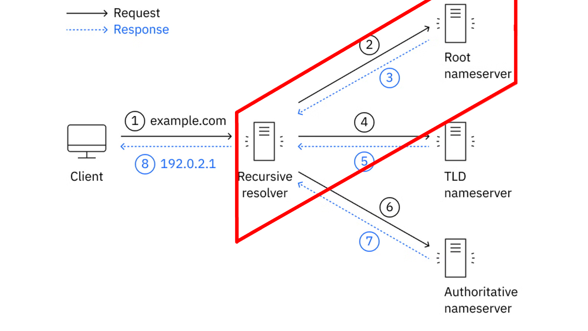
-
Existen 13 servidores raíz lógicos, identificados mediante las letras de la A a la M. Cada uno de ellos está replicado mediante numerosas instancias distribuidas geográficamente por diferentes lugares del mundo.
-
Los servidores raíz no conocen directamente la dirección IP del dominio que estamos buscando. Su función es indicar qué servidores son responsables del dominio de nivel superior (TLD Top-Level Domain) correspondiente.
-
Por ejemplo, si estamos buscando:
el servidor raíz puede indicar qué servidores se encargan del TLD
.es.
6.3 Consulta al servidor de nivel superior (TLD)
-
El resolver recursivo consulta entonces a un servidor TLD (Top-Level Domain).
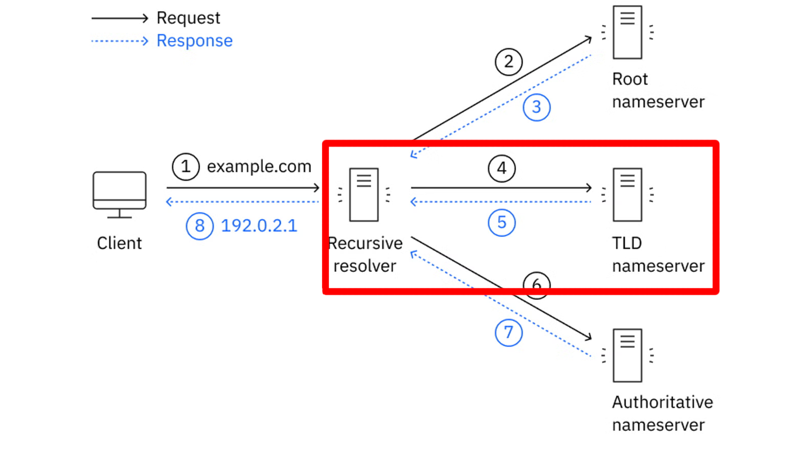
-
Un TLD es la parte final de un nombre de dominio, como:
-
El servidor TLD no proporciona necesariamente la dirección IP del equipo que buscamos. Su función es indicar cuáles son los servidores DNS autoritativos encargados del dominio correspondiente.
-
Por ejemplo, los servidores TLD
.espueden indicar qué servidores DNS son autoritativos para:
6.4 Consulta al servidor de nombres autoritativo
-
El resolver recursivo consulta finalmente a uno de los servidores DNS autoritativos responsables de la zona correspondiente.
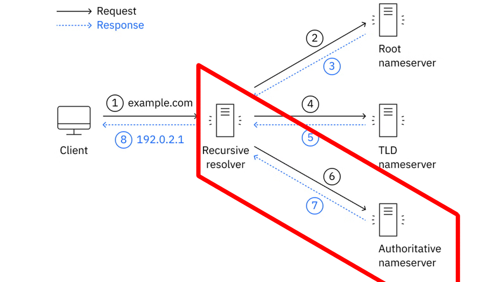
-
Un servidor autoritativo dispone de la información oficial de la zona DNS que administra. Esta información contiene diferentes registros DNS que permiten conocer los servicios asociados a los nombres del dominio.
-
Por ejemplo, un registro A puede asociar un nombre con una dirección IPv4:
-
Para IPv6 se utiliza normalmente un registro AAAA.
-
Un dominio puede disponer de varios servidores autoritativos, proporcionando redundancia y disponibilidad.
6.5 Resolución final y almacenamiento en caché
-
El resolver recursivo recibe la respuesta del servidor autoritativo y se la proporciona al dispositivo que realizó la consulta.
-
El navegador ya puede utilizar la dirección IP obtenida para establecer una conexión con el servicio correspondiente.
-
Además, el resolver puede almacenar la respuesta en su caché DNS durante el tiempo indicado por el TTL del registro.
-
De esta forma, si otro dispositivo realiza posteriormente la misma consulta, el resolver puede responder utilizando la información almacenada en caché sin tener que volver a consultar a los servidores raíz, TLD y autoritativos.
6.6 Resumen del proceso
-
De forma simplificada, podemos representar la resolución de un nombre de dominio de la siguiente manera:
flowchart TD A[Cliente] -->|1. Consulta DNS| B[DNS recursivo<br/>Resolver] B -->|2-3. Consulta a servidor raíz | C[Servidor raíz] C -->|4-5. Consulta a servidor TLD| D["Servidor TLD<br/>(.es)"] D -->|6-7. Indica los servidores<br/>autoritativos| E[Servidor autoritativo] E -->|Registro A / AAAA| F[Dirección IP] F -->|192.0.2.1| G[DNS Resolver] G -->|8. Entrega de IP a cliente <br/>192.0.2.1| H[Cliente] H -->|192.0.2.1| I["Servidor (web)"] style A fill:#f9f,stroke:#333,stroke-width:4px style B fill:#bbf,stroke:#333,stroke-width:4px style C fill:#bbf,stroke:#333,stroke-width:4px style D fill:#bbf,stroke:#333,stroke-width:4px style E fill:#bbf,stroke:#333,stroke-width:4px style F fill:#bbf,stroke:#333,stroke-width:4px style G fill:#bbf,stroke:#333,stroke-width:4px style H fill:#f9f,stroke:#333,stroke-width:4px style I fill:#bbf,stroke:#333,stroke-width:4px
Resumen de los que hemos visto
- El cliente no suele consultar directamente a los servidores raíz, TLD y autoritativos.
- Normalmente realiza una consulta a un resolver DNS recursivo, que se encarga de realizar las consultas necesarias y devolver finalmente la respuesta al cliente.
-
Por tanto, debemos distinguir entre:
Servidor DNS Función principal DNS recursivo (Resolver) Realiza la búsqueda en nombre del cliente y devuelve la respuesta Servidor raíz (Root) Indica qué servidores gestionan el TLD solicitado Servidor TLD Indica qué servidores son autoritativos para el dominio Servidor autoritativo Proporciona la información oficial de la zona DNS -
Esta jerarquía permite que el DNS sea un sistema distribuido, escalable y resistente, capaz de gestionar una enorme cantidad de nombres de dominio sin depender de un único servidor central.
7 - Jerarquía de nombres DNS
-
El sistema DNS está organizado mediante una estructura jerárquica, similar a un árbol invertido. En la parte superior se encuentra la raíz (
.) y, a medida que descendemos por la jerarquía, encontramos los diferentes dominios y subdominios. -
Si tenemos el siguiente nombre:
-
Su estructura jerárquica sería:
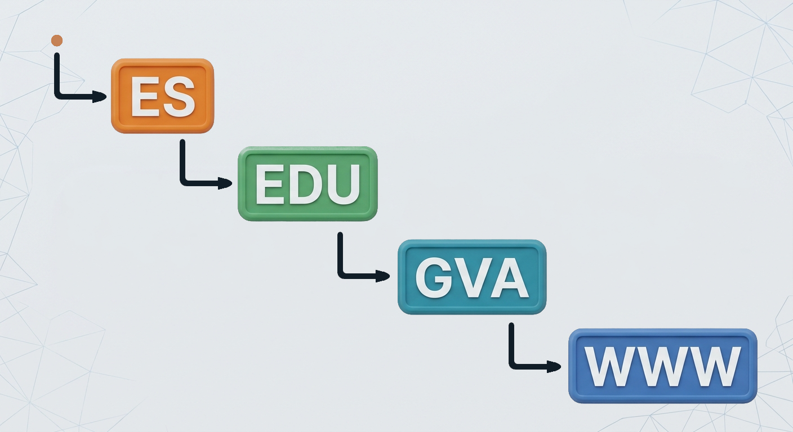
-
Cada nivel representa una parte diferente de la jerarquía DNS.
7.1 La raíz DNS
-
En la parte superior de la jerarquía se encuentra la raíz DNS, representada mediante un punto:
-
La raíz es el nivel superior de todo el sistema DNS.
-
Un nombre de dominio completamente cualificado (FQDN, Fully Qualified Domain Name) podría escribirse de la siguiente manera:
-
Normalmente este punto final no se escribe cuando utilizamos un nombre de dominio en un navegador pero forma parte de la estructura completa del nombre.
7.2 Dominios de nivel superior (TLD)
-
Por debajo de la raíz se encuentran los dominios de nivel superior, conocidos como TLD (Top-Level Domain).
-
Algunos ejemplos son:
-
Existen diferentes tipos de TLD. Por ejemplo:
- gTLD (generic Top-Level Domain):
.com,.org,.net, etc. - ccTLD (country code Top-Level Domain):
.es,.fr,.it,.de, etc.
- gTLD (generic Top-Level Domain):
-
En el caso de:
el TLD es:
7.3 Dominio
-
A la izquierda del TLD encontramos otros niveles de la jerarquía.
-
En el caso de:
Un dominio dentro del TLD
.essería.
7.4 Subdominios
-
Un subdominio es un dominio que se encuentra por debajo de otro dominio dentro de la jerarquía DNS.
-
En el caso de:
podría tener diferentes subdominios:
Y, a su vez,
edu.gva.espodría tener otros niveles: -
Los subdominios permiten organizar diferentes servicios, departamentos o recursos dentro de una misma estructura de nombres.
7.5 FQDN
-
Un FQDN (Fully Qualified Domain Name), o nombre de dominio completamente cualificado, identifica de forma completa una posición dentro de la jerarquía DNS.
-
En nuestro caso tendríamos el siguiente FQDN:
Importante
Los nombres DNS se interpretan de derecha a izquierda.
7.6 Nombre de host
-
En una red, un host es un dispositivo o sistema que puede comunicarse mediante una red.
-
En DNS, un nombre como
www.edu.gva.espuede utilizarse para identificar un servicio o un host. -
Por ejemplo, podríamos tener:
-
Cada nombre podría estar asociado mediante DNS a una dirección IP diferente:
Importante
- Cada nombre DNS no representa necesariamente un único equipo físico.
- Un mismo servicio puede estar distribuido entre varios servidores y una misma dirección IP puede utilizarse para diferentes nombres.
7.7 Zona DNS
-
Una zona DNS es una parte de la jerarquía DNS que está administrada por una organización o servidor DNS determinado.
-
La zona contiene los registros DNS que proporcionan información sobre los nombres y servicios que administra.
-
Por ejemplo, una organización podría administrar la zona:
y dentro de ella tener, en un primer escenario, todos los nombres agrupados en una única zona:
La zona podría contener registros como:
Dominio y zona no son exactamente lo mismo
- Aunque en el ejemplo anterior el dominio
edu.gva.esy la zona que lo administra coinciden, dominio y zona son conceptos diferentes. - Un dominio representa una parte de la jerarquía de nombres DNS, mientras que una zona representa una parte de esa jerarquía que está administrativamente gestionada mediante servidores DNS autoritativos.
- Un dominio puede contener diferentes subdominios y estos pueden estar delegados en otras zonas.
- Veamos un segundo escenario, alternativo al anterior, en el que la organización decide dividir la administración de
edu.gva.esen dos zonas distintas:flowchart TD A[edu.gva.es] --> X(( )) X --> B[Zona A] X --> C[Zona B] B --> D[www.edu.gva.es </br>+</br>correo.edu.gva.es] C --> E[ftp.edu.gva.es] style X fill:# style A fill:#bbf,stroke:#333,stroke-width:4px style B fill:#bbf,stroke:#333,stroke-width:4px style C fill:#bbf,stroke:#333,stroke-width:4px style D fill:#bbf,stroke:#333,stroke-width:4px style E fill:#bbf,stroke:#333,stroke-width:4px - En este segundo escenario, la organización administra directamente una zona con
www.edu.gva.esycorreo.edu.gva.es(Zona A), mientras queftp.edu.gva.esestá delegado a otros servidores DNS que administran la Zona B. Ambas zonas siguen perteneciendo al mismo dominioedu.gva.es, pero están gestionadas de forma independiente.
7.8 Resumen de la jerarquía DNS
-
Podemos resumir los diferentes conceptos mediante la siguiente imagen:
-
De esta forma, el DNS organiza los nombres mediante una estructura jerárquica en la que cada nivel puede ser administrado de forma independiente.
Concepto Significado Ejemplo Raíz Nivel superior de la jerarquía DNS .TLD Dominio de nivel superior .esDominio Nombre registrado dentro de un TLD gva.esSubdominio Dominio situado dentro de otro dominio edu.gva.esFQDN Nombre DNS completamente cualificado (incluye el punto raíz final) www.edu.gva.es.Host Equipo o servicio identificado mediante un nombre www.edu.gva.esZona Parte de la jerarquía administrada por unos servidores autoritativos concretos edu.gva.es(zona delegada, con sus propios servidores autoritativos dentro del dominiogva.es)
8 - Servidores DNS públicos y privados
-
No todos los servidores DNS tienen la misma función ni están disponibles para los mismos usuarios.
-
Dependiendo de quién pueda utilizarlos y de dónde se encuentren, podemos distinguir entre servidores DNS públicos y servidores DNS privados.
8.1 Servidores DNS públicos
-
Un servidor DNS público es un servidor DNS que ofrece su servicio de resolución de nombres a usuarios y dispositivos de Internet de forma pública.
-
Estos servidores suelen estar gestionados por empresas, organizaciones o proveedores de servicios de Internet y pueden ser utilizados por cualquier usuario que tenga acceso a Internet.
-
Algunos ejemplos conocidos son:
Servicio DNS Dirección IPv4 Google Public DNS 8.8.8.8Google Public DNS 8.8.4.4Cloudflare DNS 1.1.1.1Cloudflare DNS 1.0.0.1Quad9 9.9.9.9 -
Por ejemplo, podemos configurar un ordenador para que utilice:
-
A partir de ese momento, las consultas DNS realizadas por el dispositivo podrán enviarse a los servidores de Cloudflare.
Importante
- Un servidor DNS público no significa que sea un servidor raíz ni un servidor autoritativo.
- Por ejemplo,
1.1.1.1es un resolver DNS recursivo público. Recibe consultas de los clientes y, cuando es necesario, realiza las consultas correspondientes a otros servidores DNS de la jerarquía.
8.2 ¿Por qué utilizar un DNS público?
- Existen diferentes motivos para utilizar un servidor DNS público en lugar del servidor DNS proporcionado automáticamente por nuestro proveedor de Internet:
8.2.1 Rendimiento
-
Algunos proveedores de DNS público disponen de una infraestructura distribuida por diferentes partes del mundo. Esto permite que las consultas puedan ser atendidas desde servidores cercanos al usuario.
-
El tiempo necesario para obtener una respuesta DNS se denomina habitualmente latencia DNS.
-
Una menor latencia puede hacer que la resolución de nombres sea más rápida.
8.2.2 Disponibilidad y redundancia
-
Los grandes proveedores de DNS público utilizan infraestructuras distribuidas y redundantes.
-
Si uno de sus servidores o centros de datos deja de funcionar, otros servidores pueden continuar atendiendo las consultas.
-
Esto proporciona una elevada disponibilidad del servicio.
8.2.3 Seguridad
-
Algunos servicios DNS públicos incorporan mecanismos de seguridad adicionales, como el bloqueo de determinados dominios asociados a:
- Malware.
- Phishing.
- Botnets.
- Otros tipos de amenazas.
-
Por ejemplo, algunos resolvers públicos están diseñados específicamente para proporcionar una capa adicional de protección frente a determinados dominios maliciosos.
DNS y seguridad
- El uso de un DNS público no garantiza por sí mismo que una conexión sea segura.
- DNS se encarga principalmente de resolver nombres. La seguridad de la comunicación dependerá también de otros mecanismos, como HTTPS/TLS, firewalls, sistemas de detección de intrusiones y otros controles de seguridad.
8.3 Servidores DNS privados
-
Un servidor DNS privado es un servidor DNS que está destinado a una organización, red o conjunto limitado de usuarios.
-
A diferencia de un servidor DNS público, no está pensado para que cualquier usuario de Internet pueda realizar consultas libremente.
-
Los servidores DNS privados son muy habituales en:
- Empresas.
- Centros educativos.
- Organismos públicos.
- Redes domésticas.
- Centros de datos.
- Redes virtuales en la nube.
Ejemplo de red empresarial
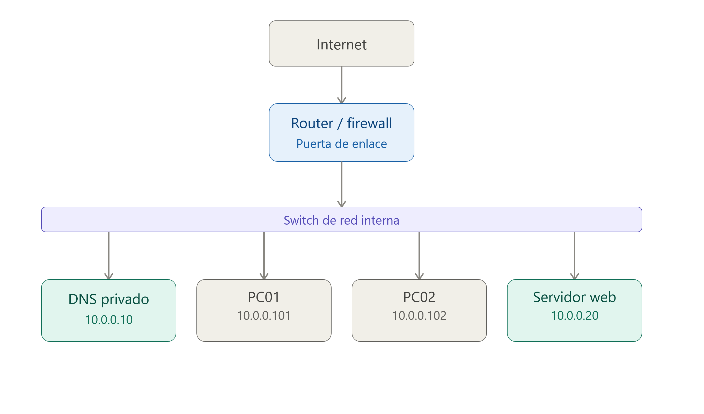
Dónde:10.0.0.0/24es la red de la empresa.10.0.0.10es el servidor DNS interno.10.0.0.20es el servidor Web de la empresa.10.0.0.101es un dispositivo conectado a la red (p.e.: impresora) con el nombre DNS impresora.empresa.local10.0.0.102otro dispositivo conectado a la red (p.e.: nas) con el nombre DNS nas.empresa.local
Estos nombres pueden (suelen) no existir en el DNS público de Internet
8.4 DNS privado y acceso a Internet
-
Un servidor DNS privado no tiene por qué limitarse a resolver nombres internos.
-
También puede actuar como resolver recursivo para los dispositivos de la organización.
-
Si miramos el siguiente esquema veremos que el servidor DNS puede resolver tanto
servidor.empresa.localutilizando sus zonas internas comowww.google.com,www.wikipedia.orgywww.aules.edu.gva.esrealizando consultas recursivas hacia otros servidores DNS.
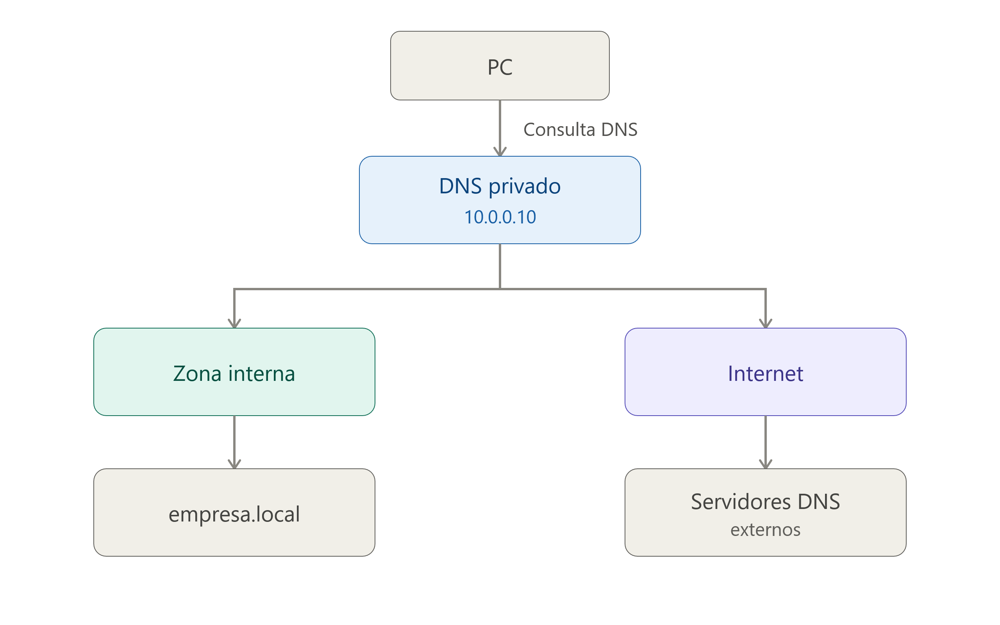
8.5 Servidor DNS privado en una red local
En una red local, los equipos suelen obtener automáticamente la dirección del servidor DNS mediante el protocolo DHCP.
Configurción dee red devuelta por el servidor DHCP
Configuración recibida mediante DHCP
Dirección IP: 192.168.10.101
Máscara: 255.255.255.0
Puerta de enlace: 192.168.10.1
Servidor DNS: 192.168.10.10
Dónde:
- El ordenador cliente recibe la IP
192.168.10.101. - El ordenador cliente utilizará
192.168.10.10para realizar consultas DNS. - El ordenador cliente utilizará
192.168.10.1como puerta de enlace es decir para acceder a internet. - El servidor DNS privado podría resolver tanto nombres internos como nombres de Internet.
Ejemplo de consulta DNS interna
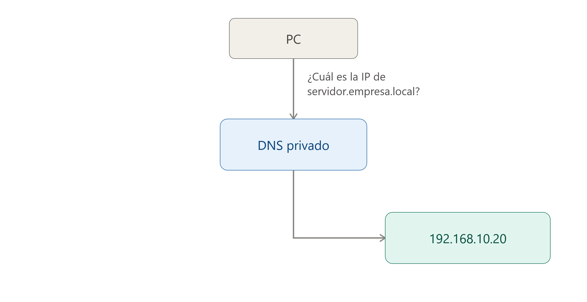
Ejemplo de consulta DNS externa
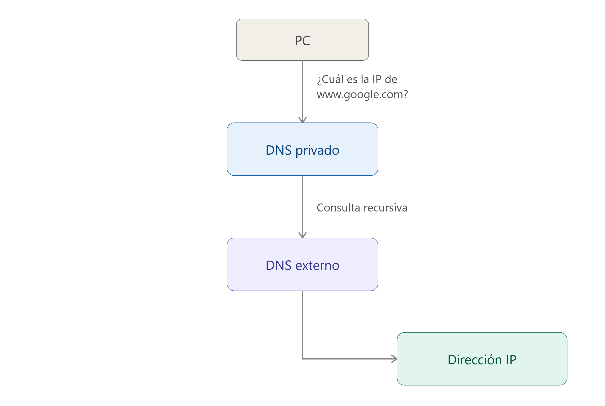
8.6 Comparativa DNS público vs. DNS privado
- Podemos comparar ambos tipos de servidores:
| Característica | DNS público | DNS privado |
|---|---|---|
| Acceso | Público | Restringido |
| Usuarios | Cualquier usuario | Usuarios de una organización o red |
| Uso habitual | Resolver nombres de Internet | Resolver nombres internos y externos |
| Ejemplo | 1.1.1.1 |
192.168.10.10 |
| Administración | Proveedor externo | Organización |
| Nombres internos | Normalmente no | Sí |
| Uso en empresas | Posible | Muy habitual |
| Accesible desde Internet | Generalmente sí | Normalmente no |
9 - Evolución del protocolo DNS y seguridad
-
El protocolo DNS ha evolucionado para adaptarse a las necesidades cada vez mayores de las redes y, especialmente, para solucionar algunos de sus problemas de seguridad.
-
Dos de las principales tecnologías relacionadas con esta evolución son DDNS (Dynamic DNS) y DNSSEC (DNS Security Extensions).
9.1 DDNS
-
El DDNS (Dynamic DNS o DNS dinámico) permite actualizar automáticamente los registros de un servidor DNS cuando cambia la dirección IP asociada a un nombre de dominio.
-
Su principal utilidad es permitir que un dispositivo o servidor cuya dirección IP es dinámica pueda seguir siendo accesible mediante un nombre de dominio, aunque su dirección IP cambie.
Ejemplo
-
Imaginemos un servidor al que queremos acceder utilizando el nombre:
-
Si el servidor tiene una dirección IP dinámica, esta podría cambiar periódicamente:
-
y posteriormente:
-
El servicio DDNS se encarga de actualizar el registro DNS para que el nombre continúe apuntando a la dirección IP actual.
-
Un mecanismo habitual consiste en que un dispositivo o servicio con conocimiento del cambio de IP comunique la nueva dirección al servidor DNS para actualizar el registro correspondiente.
-
En determinadas redes, el servidor DHCP puede participar en este proceso. Cuando asigna o modifica una dirección IP, puede actualizar también los registros DNS asociados. De esta forma, DHCP y DNS pueden trabajar conjuntamente para mantener actualizada la información de nombres y direcciones.
Importante:
- DDNS no es un protocolo DNS diferente.
- Es un mecanismo o servicio que permite realizar actualizaciones dinámicas de los registros DNS.
9.2 DNSSEC
-
DNSSEC (Domain Name System Security Extensions o extensiones de seguridad para el DNS) es un conjunto de extensiones que permite añadir autenticidad e integridad a la información proporcionada por DNS.
-
El funcionamiento tradicional de DNS presenta un problema: un atacante podría intentar proporcionar al cliente una respuesta DNS falsa.
Ejemplo
-
Ante una consulta como:
-
Un atacante podría intentar conseguir que el cliente recibiera una dirección IP incorrecta:
-
DNSSEC utiliza firmas digitales para que el resolver DNS pueda comprobar que los datos recibidos son auténticos y que no han sido modificados.
-
Por tanto, DNSSEC permite proteger principalmente:
- La autenticidad: comprobar que los datos DNS proceden de la zona DNS que tiene autoridad sobre ellos.
- La integridad: comprobar que los datos no han sido modificados durante su transmisión.
Importante
- DNSSEC no cifra las consultas ni las respuestas DNS. Por tanto, no proporciona confidencialidad.
- Tampoco garantiza por sí mismo que el usuario esté conectado directamente con su servidor DNS real. Su objetivo es permitir que el resolver pueda validar criptográficamente la autenticidad de los datos DNS recibidos.
Importante
- DNSSEC protege la información DNS, pero no protege la disponibilidad del servicio. Por tanto, no evita los ataques de denegación de servicio (DoS o DDoS).
- Además, las respuestas DNSSEC suelen ser de mayor tamaño debido a la información criptográfica que contienen. Esto puede contribuir a que determinadas configuraciones de DNS sean utilizadas en ataques de amplificación DNS, aunque DNSSEC no sea la causa de estos ataques.
En resumen
- DNSSEC proporciona autenticidad e integridad, pero no confidencialidad ni disponibilidad.
9.3 Envenenamiento de la caché DNS
-
Uno de los principales problemas de seguridad del DNS tradicional es que, si un atacante consigue introducir información DNS falsa en la caché de un servidor DNS, puede conseguir que las consultas de los usuarios sean redirigidas a direcciones IP incorrectas.
-
Este ataque se conoce como DNS cache poisoning o envenenamiento de la caché DNS.
Ejemplo
-
Un usuario quiere acceder a la web de su banco:
-
Normalmente, el servidor DNS debería proporcionar la dirección IP legítima:
-
Sin embargo, si un atacante consigue introducir un registro falso en la caché DNS:
-
Los usuarios que reciban esa respuesta podrían ser enviados a un servidor controlado por el atacante.
-
El objetivo podría ser mostrar una página web falsa que imite a la original para intentar obtener credenciales de acceso, datos personales u otra información confidencial.
-
Este tipo de ataque puede utilizarse, por ejemplo, como parte de una campaña de phishing.
Prevención contra el DNS cache poisoning
- DNSSEC ayuda a prevenir el problema del ataque de envenenamiento de caché porque permite al resolver DNS comprobar mediante firmas digitales que los registros DNS recibidos son auténticos y no han sido modificados.
Importante
- No debemos confundir el envenenamiento de la caché DNS con el hecho de que un servidor DNS haya sido comprometido.
- En el primer caso, el atacante intenta introducir información DNS falsa en la caché de un resolver.
- En el segundo, el propio servidor DNS puede haber sido tomado bajo control por el atacante.
9.4 Ataques Man-in-the-Middle
- Un ataque Man-in-the-Middle (MITM), o hombre en el medio, se produce cuando un atacante consigue situarse entre dos dispositivos que se están comunicando.
Ejemplo
-
Imaginemos que un usuario cree estar comunicándose directamente con el servidor de su banco:
-
En un ataque MITM, el atacante intenta situarse entre ambos:
-
El atacante puede recibir el tráfico, analizarlo y, dependiendo de las circunstancias y de las protecciones utilizadas, intentar modificarlo antes de reenviarlo.
Importante
- Un ataque MITM no es específico de DNS. Puede producirse en diferentes tipos de comunicaciones de red.
- Además, utilizar DNSSEC no sustituye a mecanismos como HTTPS/TLS, que son los encargados de proteger la comunicación entre el navegador y el servidor web.
10 - Registros DNS
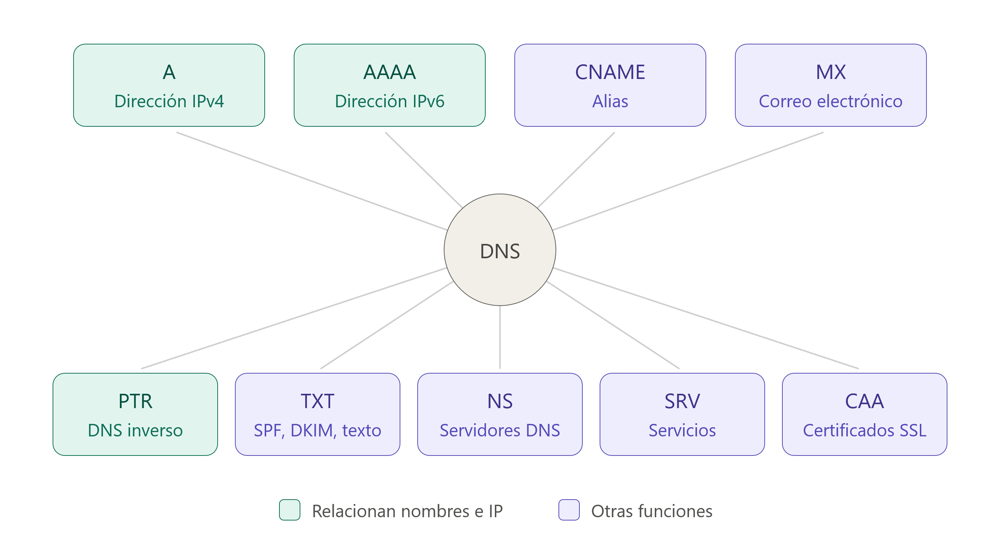
10.1 Introducción
-
Los registros DNS son datos que contienen información sobre los nombres de dominio y los servicios asociados a ellos.
-
En los servidores DNS autoritativos, estos registros pueden almacenarse en archivos de zona. Un archivo de zona es un archivo de texto que contiene los registros DNS y determinadas directivas que describen una zona DNS.
-
La sintaxis de los archivos de zona establece cómo deben escribirse estos registros y directivas para que el servidor DNS pueda interpretarlos correctamente.
Ejemplo
-
Cuando un usuario introduce en su navegador una dirección como:
-
El navegador necesita conocer la dirección IP asociada al nombre de host www.ejemplo.com.
-
Para obtenerla, se inicia una consulta DNS.
-
El equipo del usuario normalmente realiza la consulta a un servidor DNS recursivo o resolver.
-
Este servidor puede disponer de la respuesta en su caché. Si no la tiene, puede realizar consultas a otros servidores DNS hasta encontrar la información necesaria.
-
-
En una resolución DNS pueden intervenir diferentes tipos de servidores, entre ellos:
- Servidores DNS recursivos: reciben las consultas de los clientes y se encargan de obtener la respuesta.
- Servidores DNS raíz: indican qué servidores son responsables de los diferentes dominios de nivel superior (Top-Level Domains o TLD), como
.com,.orgo.es. - Servidores DNS de TLD: indican cuáles son los servidores autoritativos responsables de un dominio concreto.
- Servidores DNS autoritativos: contienen la información oficial de una zona DNS y proporcionan los registros correspondientes.
10.2 TTL (Time To Live)
-
Los registros DNS incluyen un valor denominado TTL (Time To Live).
-
El TTL indica durante cuánto tiempo puede mantenerse un registro DNS en la caché de un servidor DNS recursivo antes de que deba volver a consultarse.
Ejemplo
-
Si un registro tiene:
-
El valor
3600representa un TTL de 3600 segundos, es decir, 1 hora. -
Durante ese periodo, un servidor DNS recursivo puede utilizar la información almacenada en su caché sin tener que volver a consultar al servidor autoritativo.
Importante
- El TTL no indica cada cuánto tiempo se actualiza el registro en el servidor DNS autoritativo.
- Indica cuánto tiempo otros servidores pueden conservar ese registro en su caché.
-
10.3 Tipos de Registros DNS
10.3.1 Registro A (Address)
- Los registros de direcciones, o registros A, son los registros DNS más utilizados. Crean una conexión directa entre una dirección IPv4 y un nombre de dominio.
- Permiten que un navegador web cargue un sitio utilizando un nombre de dominio legible, evitando que el usuario tenga que recordar complejas direcciones IP numéricas.
- Redundancia: Es posible configurar múltiples registros A para un mismo dominio, lo que proporciona respaldo y redundancia en caso de fallos.
- Seguridad: Se utiliza también en listas negras basadas en DNS (DNSBL) para bloquear correos provenientes de fuentes de spam conocidas.
Sintaxis típica
midominio.com. IN A 192.0.2.15.
10.3.2 Registro AAAA (Quad A)
- Funciona de manera similar al registro A, pero conecta nombres de dominio con direcciones IPv6.
- Aunque menos común que IPv4, su adopción global va en aumento para resolver el problema del agotamiento de las direcciones IPv4 tradicionales.
Sintaxis típica
midominio.net. IN AAAA 2001:0db8:85a3:0000:0000:8a2e:0370:1234
10.3.3 Registro CNAME (Canonical Name)
- Los registros de nombres canónicos, o registros CNAME, dirigen un dominio de alias a un dominio canónico.
- Los registros CNAME se usan a menudo para asignar un nombre de dominio con un alias al dominio principal que lleva el registro A o AAAA.
Ejemplo
- En lugar de crear dos registros A para
www.example.comyproduct.example.com, puede vincularproduct.example.coma un registro CNAME que luego se vincula a un registro A paraexample.com. - El valor es que si la dirección IP cambia para el dominio raíz, solo se tendrá que actualizar el registro A y el CNAME se actualizará en consecuencia.
- Restricciones de configuración:
- No se puede ubicar un registro CNAME en el dominio de raíz.
- Los registros de servidores de correo (MX) y servidores de nombres (NS) nunca deben estar dirigidos a un CNAME.
- Aunque técnicamente es posible apuntar un CNAME a otro CNAME, esta práctica no se recomienda porque resulta ineficaz y ralentiza la velocidad de carga.
10.3.4 Registro DNAME
- Los registros de nombres de delegación, o registros DNAME, se utilizan para redirigir varios subdominios con un registro y apuntarlos a otro dominio.
Ejemplo
- Un registro DNAME que vincule
domain.comaexample.comvincularáproduct.domain.com,trial.domain.com, yblog.domain.comaexample.com. - Estos registros son útiles para administrar dominios a gran escala y para administrar cambios de nombres de dominio al garantizar que los subdominios estén vinculados correctamente.
10.3.5 Registros CAA
-
Los registros de autorización de autoridad de certificación, o registros CAA, permiten a los propietarios de dominios especificar qué autoridades de certificación (CA) pueden emitir certificados para su dominio.
-
Una CA es una organización que valida la identidad de los sitios web y los conecta a claves criptográficas mediante la emisión de certificados digitales.
10.3.6 Registro NS (Nameserver)
- Especifica qué servidor de nombres o servidor DNS en particular actúa como la autoridad autoritativa para un dominio o subdominio.
Importante
- El registro NS indica qué servidor alberga físicamente los archivos de zona del dominio.
- Sin un registro NS debidamente configurado, es imposible cargar o acceder a un sitio web.
10.3.7 Registro MX (Mail Exchange)
-
Los registros MX son indispensables para la recepción de correos electrónicos bajo el nombre de dominio.
-
Indica cuáles son los servidores de correo autorizados para recibir los mensajes mediante el protocolo SMTP.
Sintaxis típica
midominio.com. IN MX 10 mail.midominio.com.
10.3.8 Registro TXT
- Permite que un administrador pueda almacenar notas de texto en el registro. Estos registros se suelen utilizar para la seguridad del correo electrónico.
10.3.9 Registros CERT
-
Los certificados, o registros CERT, almacenan certificados que verifican la autenticidad de todas las partes involucradas.
-
Este tipo de registro es particularmente valioso cuando se protege y encripta información confidencial.
10.3.10 Registros SOA
Los registros de inicio de autoridad, o registros SOA, almacenan información administrativa importante sobre un dominio. Esta información puede incluir la dirección de correo electrónico del administrador del dominio, información sobre las actualizaciones del dominio y cuándo un servidor debe actualizar su información.
10.3.11 Registros PTR
Los registros de puntero, o registros PTR, funcionan en la dirección opuesta a los registros A. Se utilizan para conectar una dirección IP con un nombre de dominio, en lugar de un nombre de dominio con una dirección IP.
Cuando una búsqueda de DNS comienza con una dirección IP, encuentra el nombre de host correspondiente. Estos registros se utilizan para detectar spam comprobando si las direcciones IP y las direcciones de correo electrónico asociadas son utilizadas por servidores de correo electrónico legítimos. El host del servidor debe configurar los registros PTR.